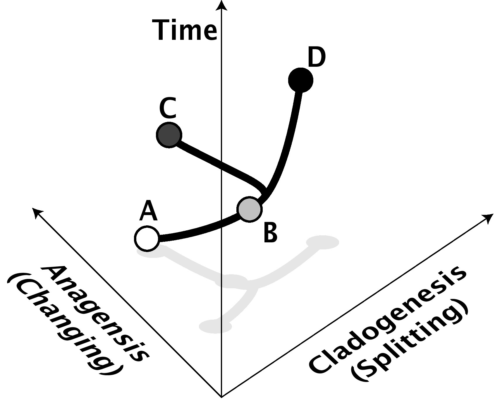
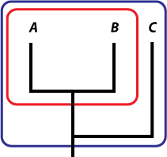
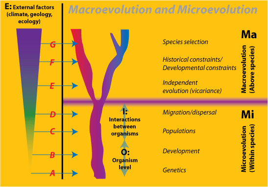
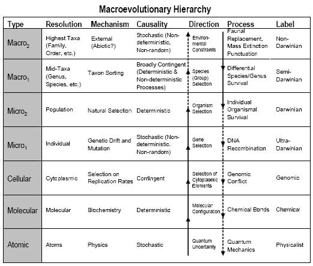
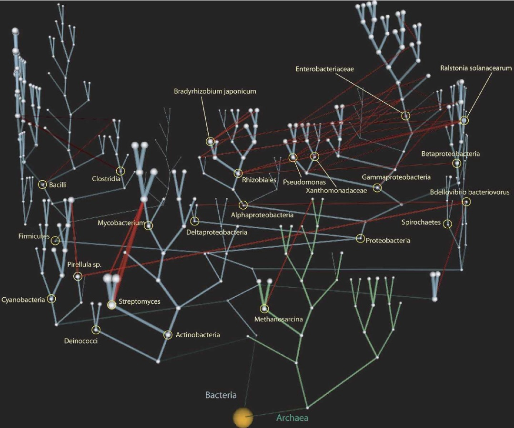

Para leer en conjunto con el FAQ de 29+ evidencias para la macroevolución de Douglas Theobald.
Este FAQ cubre los siguientes temas:
-
Lo que significan macroevolución y microevolución
-
Cómo se utilizan los términos y cómo surgieron
-
Confusiones en la literatura científica sobre los términos
-
Un debate filosófico sobre si la macroevolución es reducible a la microevolución, o si constituye un proceso separado en la evolución
-
Si existen o no barreras que impiden que la microevolución, que aceptan los creacionistas, se convierta en macroevolución, que rechazan
-
Si la idea de la macroevolución puede ser refutada, y si los relatos específicos de la macroevolución pueden ser refutados.
Los antievolutionistas argumentan contra la macroevolución con tanta fuerza que algunas personas piensan que inventaron el término para descartar la evolución. Pero esto no es cierto; los científicos no solo utilizan los términos, sino que tienen un elaborado conjunto de modelos e ideas al respecto, los cuales, por supuesto, los antievolutionistas pasan por alto o tratan como si fueran de alguna manera problemas para la biología evolutiva.
Una versión posterior añadirá una sección sobre cómo los creacionistas "mueven los postes" cuando se enfrentan a evidencia innegable de la macroevolución, pero por ahora consulte el FAQ hermano de Douglas Theobald.
Se invita al lector a omitir la sección sobre la reducción. Esta es una discusión mayormente filosófica incluida porque es un debate dentro de la comunidad científica. No tiene impacto en el hecho de la evolución por encima de la especie (es decir, sobre la especiación, la descendencia común y el patrón en el registro filogenético). Pero es a menudo el objeto de debates acalorados en foros que discuten la evolución en el contexto del creacionismo.
Como le dijo Humpty Dumpty a Alicia:
¡Hay gloria para ti!
'No sé lo que quieres decir con "gloria",' dijo Alicia.
Humpty Dumpty sonrió con desdén. 'Por supuesto que no – hasta que te lo diga. Quise decir "¡hay un buen argumento para ti!"'
'Pero "gloria" no significa "un buen argumento",' objetó Alicia.
'Cuando yo uso una palabra,' dijo Humpty Dumpty con un tono bastante despectivo, 'significa exactamente lo que yo elija que signifique – ni más ni menos.'
'La cuestión es,' dijo Alicia, 'si puedes hacer que las palabras signifiquen tantas cosas diferentes.'
'La cuestión es,' dijo Humpty Dumpty, 'quién va a ser el maestro – eso es todo.'
Las palabras no son el amo de la ciencia; la ciencia lo es, o debería serlo, de sus palabras. Pero podemos indagar cómo los científicos utilizan sus palabras y si lo hacen de manera consistente. Y habiendo hecho eso, podemos indagar si otros que no son científicos leen demasiado en ellas, o las utilizan de una manera totalmente diferente.
Contenido
- ¿Qué es la macroevolución?
- La historia del concepto de macroevolución
- Confusiones
- ¿Es la macroevolución reducible a la microevolución?
- Clasificación/selección de especies
- Restricciones históricas/bauplans
- Propiedades emergentes
- Barreras para la macroevolución
- Falsar la macroevolución
- Conclusiones
- Notas
- Referencias
¿Qué es la macroevolución?
Primero, debemos tener claras las definiciones. Los siguientes términos están definidos: macroevolución, microevolución, cladogénesis, anagénesis, teoría del equilibrio puntuado, gradualismo filético
Los creacionistas suelen afirmar que la "macroevolución" no está demostrada, incluso si la "microevolución" lo está, y con esto parecen querer decir que cualquier evolución que se observa es microevolución, pero el resto es macroevolución. Al hacer estas afirmaciones, están mal utilizando términos científicos auténticos; es decir, tienen una definición no estándar, que utilizan para hacer que la ciencia parezca decir algo diferente a lo que dice. Los defensores de la evolución suelen decir que los creacionistas inventaron los términos. Esto es falso. Tanto macroevolución como microevolución son términos científicos legítimos, que tienen una historia de significados cambiantes que, de todos modos, no sirven para fundamentar el creacionismo.
En la ciencia, el prefijo macro al inicio de una palabra simplemente significa "grande", y el prefijo micro al inicio de una palabra simplemente significa "pequeño" (ambos de las palabras griegas). Por ejemplo, un macrófago significa una célula más grande de lo normal, pero solo es unas pocas veces más grande que otras células, y no un orden de magnitud más grande. Algo puede ser "macro" simplemente por ser más grande, o puede haber una transición que lo haga algo bastante distinto.
En la biología evolutiva actual, el macroevolución se utiliza para referirse a cualquier cambio evolutivo a o por encima del nivel de especie. Significa al menos la división de una especie en dos (especiación, o cladogénesis, del griego que significa "el origen de una rama", ver Fig. 1) o el cambio de una especie con el tiempo en otra (anagénica especiación, no generalmente aceptada hoy en día [nota 1]). Cualquier cambio que ocurra a niveles superiores, como la evolución de nuevas familias, filos o géneros, es también por lo tanto macroevolución, pero el término no está restringido a esos niveles superiores. A menudo también significa tendencias a largo plazo o sesgos en la evolución de niveles taxonómicos superiores.
Microevolución se refiere a cualquier cambio evolutivo por debajo del nivel de especie, y se refiere a cambios en la frecuencia dentro de una población o una especie de sus alelos (genes alternativos) y sus efectos sobre la forma, o fenotipo, de los organismos que componen esa población o especie. También puede aplicarse a cambios dentro de las especies que no son genéticos.
 |
Figura 1: Anagénesis y cladogénesis. En este ejemplo, la especie A cambia anagénicamente con el tiempo para convertirse en la especie B, mientras que la especie B cambia cladogénicamente con el tiempo al dividirse en las especies C y D, ninguna de las cuales es muy diferente de B o de la otra. El eje de anagénesis representa el cambio de forma, ya sea genético o fenotípico. El eje cladogénico representa el aislamiento de las especies entre sí (por ejemplo, aislamiento reproductivo). Por supuesto, la cladogénesis y la anagénesis a menudo van de la mano también. La anagénesis no es considerada por la mayoría de los científicos como especiación "real", aunque es indistinguible en el registro fósil de un evento cladogénico. |
Otra forma de expresar la diferencia es que la macroevolución es la evolución entre especies y la microevolución es la evolución dentro de las especies. A veces, la macroevolución se llama "evolución supraspecífica" (Rensch 1959, véase Hennig 1966: 223-225).
Existen diversas perspectivas sobre la dinámica de la macroevolución. Equilibrio puntuado son patrones de cambio que indican estasis, o largos periodos de tiempo donde las especies exhiben muy poco cambio. Existen varias hipótesis que intentan explicar la estasis. El consenso actual entre los paleontólogos es que las poblaciones grandes están protegidas contra el cambio evolutivo por la selección natural o la deriva genética. El cambio evolutivo se vuelve más fácil cuando las poblaciones se dividen en demes más pequeños. Este cambio puede quedar "bloqueado" si las subpoblaciones evolucionan aislamiento reproductivo y se convierten en especies separadas. Por eso el cambio se asocia con la cladogénesis. Filogenia gradual sugiere que las especies continúan adaptándose a nuevos desafíos a lo largo de su historia (ver Fig. 1). Las teorías de selección de especies y clasificación de especies piensan que existen procesos macroevolutivos que hacen más o menos probable que ciertas especies existan por mucho tiempo antes de extinguirse, en una especie de paralelo a lo que sucede a los genes en la microevolución.
La historia del concepto de macroevolución
¿Cómo entraron los términos en el uso científico y qué ha ocurrido con ellos desde entonces?
En la "síntesis moderna" del neodarwinismo, que se desarrolló en el período comprendido entre 1930 y 1950 con la reconciliación de la evolución por selección natural y la genética moderna, la macroevolución se considera el efecto combinado de los procesos microevolutivos.
Los términos macroevolución y microevolución fueron acuñados por primera vez en 1927 por el entomólogo ruso Iuri'i Filipchenko (o Philipchenko, dependiendo de la transliteración), en su obra en alemán Variabilität und Variation, que fue un intento temprano de reconciliar la genética mendeliana y la evolución. Filipchenko era un evolucionista, pero como escribió durante el periodo en que el mendelismo parecía haber hecho redundante al darwinismo, el llamado "eclipse del darwinismo" (Bowler 1983), no era un darwinista, sino un ortogenetista (creía que la evolución tenía una dirección). Además, los biólogos rusos de la época tenían una historia de rechazar el mecanismo maltusiano de la evolución por competencia de Darwin (Todes 1989).
En la obra fundacional de Dobzhansky sobre la Síntesis Moderna, Genética y el Origen de las Especies, comenzó diciendo que "estamos compelidos, al nivel actual de conocimiento, a poner reticentemente un signo de igualdad entre los mecanismos de la macro- y la microevolución" (1937: 12), introduciendo así los términos en la comunidad biológica de habla inglesa (Alexandrov 1994). Dobzhansky había sido estudiante de Filipchenko y lo consideraba su mentor. En la ciencia, como en todas las disciplinas académicas, es difícil negar un principio fundamental de uno de sus maestros debido a la lealtad filial, y Dobzhansky, quien efectivamente inició la síntesis darwiniana moderna con este libro, encontró desagradable tener que negar las opiniones de su maestro (Burian 1994).
El término cayó en desuso limitado cuando fue adoptado por autores como el genetista Richard Goldschmidt (1940) y el paleontólogo Otto Schindewolf para describir sus teorías ortogénicas. Como resultado, aparte de Dobzhansky, Bernhardt Rensch y Ernst Mayr, muy pocos escritores neodarwinianos utilizaron el término, prefiriendo en su lugar hablar de la evolución como cambios en las frecuencias alélicas sin mencionar el nivel de los cambios (por encima del nivel de especie o por debajo). Aquellos que sí lo hacían generalmente trabajaban dentro de las tradiciones europeas continentales (como Dobzhansky, Mayr, Rensch, Goldschmidt y Schindewolf) y aquellos que no lo hacían generalmente trabajaban dentro de la tradición angloamericana (como John Maynard Smith y Richard Dawkins). Por lo tanto, el uso del término "macroevolución" a veces se utiliza incorrectamente como un litmus test para determinar si el escritor es o no "correctamente" neodarwiniano (Eldredge 1995: 126-127).
El término fue revivido por un número de autores principalmente paleontológicos como Steven Stanley (1979), Stephen Jay Gould y Niles Eldredge, los autores de la teoría del equilibrio puntuado (véase Eldredge 1995), quienes argumentaron que algo más que los procesos intraespecíficos están causando la macroevolución, aunque desaconsejan la visión de que la evolución es progresiva. Muchos paleontólogos han sostenido que lo que ocurre en la evolución más allá del nivel de especie se debe a procesos que operan más allá del nivel de poblaciones – por ejemplo, la noción de selección de especies (la idea de que las propias especies son seleccionadas de manera similar a la forma en que los alelos son seleccionados dentro de las poblaciones, véase Grantham 1995, Rice 1995 y Stidd y Wade 1995 para revisiones y discusiones).
La idea de que el origen de taxones superiores como los géneros requiere algo especial se basa a menudo en un malentendido sobre la forma en que surgen nuevas linajes. Las dos especies que son el origen de las linajes caninos y felinos probablemente difirieron muy poco de su especie ancestral común y entre sí. Pero una vez que se aislaron taxonómicamente entre sí, evolucionaron cada vez más diferencias que compartían internamente pero que otros linajes no tenían. Esto es cierto para todos los linajes hasta la primera célula eucariota (nuclear). Incluso los cambios en la explosión cámbrica son de este tipo, aunque algunos (por ejemplo, Gould 1989) piensan que los genomas (estructuras génicas) de estos animales tempranos no estaban tan estrictamente regulados como los animales modernos, y por lo tanto tenían más libertad para cambiar.
Confusiones
Modos en los que el término "macroevolución" es utilizado por los científicos. Algunos son precisos en la forma en que lo usan, mientras que otros son menos precisos. Estos usos no son todos iguales, y esto causa cierta confusión. ¿Por qué los científicos no están de acuerdo en el significado de sus términos?
El significado que los autores modernos dan a los términos "macroevolución" y "microevolución" suele ser confuso y varía según lo que estén discutiendo. Este es particularmente el caso cuando se discuten procesos evolutivos de "gran escala". Por ejemplo, R. L. Carroll, en su libro de texto universitario (1997: 10), define la microevolución como "fenómenos a nivel de poblaciones y especies" y la macroevolución como "patrones evolutivos expresados a lo largo de millones y cientos de millones de años". Eldredge dice: "La macroevolución, sin importar cómo se defina con precisión, siempre connota 'cambio evolutivo de gran escala' (1989: vii) y a lo largo de su libro habla de la macroevolución como aproximadamente equivalente a la evolución de taxones de un rango superior al de especie, como géneros, órdenes, familias y similares. En su libro Evolución, Mark Ridley define los términos de la siguiente manera (2004: 227):
La macroevolución significa evolución a gran escala, y se estudia principalmente en el registro fósil. Se contrasta con la microevolución, el estudio de la evolución en períodos de tiempo cortos, como el de una vida humana o menos. Por lo tanto, la microevolución se refiere a cambios en la frecuencia génica dentro de una población.... Los eventos macroevolutivos son mucho más propensos a tomar millones de años. La macroevolución se refiere a cosas como las tendencias en la evolución de los caballos ... o el origen de grupos principales, o las extinciones masivas, o la explosión cámbrica.... La especiación es la línea divisoria tradicional entre la micro- y la macroevolución.
Hay muchos artículos publicados que utilizan el término de esta manera de "categoría superior"; ¿por qué es eso?
La ciencia no siempre es consistente en el uso de términos; esta es la fuente de mucha confusión. A veces esto es por descuido, y otras veces se debe a la manera en que los términos se desarrollan con el tiempo. Cuando los biólogos y paleontólogos hablan de macroevolución en el sentido de "evolución a gran escala", estrictamente hablando se refieren solo a una parte de los fenómenos que cubre el término, pero es la parte más interesante para esos especialistas. Es decir, están hablando de los patrones de evolución por encima del nivel de especie (Smith 1994).
Para tener un patrón, es necesario poder comparar tres o más especies (Fig. 2). Por sí sola, la especie A no forma patrones, y mientras que los cambios dentro de ella no den lugar a una nueva especie, la evolución es microevolutiva. Si una nueva especie B se separa de A, entonces se tiene macroevolución, pero sin patrones. Para que haya un patrón, es necesario poder decir que una especie está más estrechamente relacionada con otra que con una tercera (en este caso, que A está más cerca de B que de C).
 |
Figura 2: Si solo se identifican dos especies o taxones superiores (conjunto rojo), no hay patrón. Si se incluyen tres o más (conjunto azul), entonces se puede afirmar que uno está más estrechamente relacionado, en términos evolutivos, con otro que con el tercero; en este caso, A y B están más estrechamente relacionados entre sí que con C, que se separó antes que la separación de A/B. |
Los tipos de patrones que la gente está interesada cuando discute la macroevolución tienden a involucrar muchas especies, ya sea como un solo gran grupo ("taxón superior") o individualmente. Esta es la razón por la que muchos autores usan el término "macroevolución" para significar "evolución a gran escala". Sin embargo, al igual que la especiación anagénica, "gran escala" es un término arbitrario y a menudo subjetivo, y el significado objetivo de la macroevolución es la evolución a o por encima del nivel de especie [nota 2]. Por lo tanto, la "definición" de Carroll es problemática, a pesar de su prominencia en el campo, y este tipo de confusión debe ser evitado. Un intento anterior por Simpson (1944) de introducir "megaevolución" para cambios a gran escala también no fue aceptado, en parte porque nunca estuvo del todo claro cuándo "macro" terminaba y "mega" comenzaba.
Una definición más reflexiva es la de Levinton: "Defino el proceso de macroevolución como la suma de aquellos procesos que explican las transiciones de estados de caracteres que diagnostican las diferencias evolutivas de rangos taxonómicos mayores" (Levinton 2001:2). Aquí, Levinton intenta definir la macroevolución de manera que no sea prejudicial al debate sobre el que escribe. Se centra en los caracteres de los taxones y es neutral respecto al nivel de taxones involucrados. Niega la definición a nivel de "especie" porque cree, y creo innecesariamente, que ello convierte a la macroevolución en el estudio de la especiación. Si el análisis de "patrones" anterior es correcto, entonces la macroevolución solo incluye el estudio de la especiación, pero no está en absoluto restringida a ella. El alcance de la macroevolución se eleva muy por encima de ese nivel. Vale la pena observar, sin embargo, que los niveles taxonómicos superiores linneanos son artificiales, construidos por conveniencia por los sistemáticos. Las conclusiones sobre la evolución que se basan en niveles taxonómicos como géneros o familias (por ejemplo, el trabajo de Raup y Sepkoski sobre la extinción, Raup y Sepkoski 1986, Sepkoski 1987, Raup 1991) deben tomarse con una pizca de sal, ya que los niveles de taxón no son los "mismos" entre grupos filogenéticamente distantes, porque no son "naturales", aunque de hecho (como se mostrará) puedan ser buenos sustitutos para la diversidad filogenética.
De paso, el estudio de la especiación ha cobrado impulso significativo en los últimos años con un trabajo teórico sólido que sugiere que muchos efectos macroevolutivos son, de hecho, el resultado de procesos a nivel de población (Gavrilets 2003, 2004, Gavrilets y Gravner 1997). Utilizando la metáfora del paisaje adaptativo —el campo de todas las posibles recombinaciones génicas para una población, a cada una de las cuales se le asigna un valor de aptitud por parte del entorno—, Gavrilets y sus colegas han demostrado que lo que ocurre a nivel de población puede, de hecho, conducir a la divergencia entre ellas, pero que la mayoría de las veces las poblaciones que se mantienen con una alta aptitud gracias a la selección pueden, no obstante, "derivar" aleatoriamente una de la otra.
¿Es la macroevolución reducible a la microevolución?
Noticias de última hora: los filósofos de la ciencia les gusta debatir sobre la reducción de un tipo de ciencia a otro. Muchos han preguntado si la macroevolución se reduce a la microevolución. Es decir, si los cambios más grandes en la evolución son "simplemente la suma de" pequeños cambios. Necesitamos entender qué significa "reducción" en la filosofía de la ciencia antes de empezar a acusar a la gente de ser "reduccionistas" o "holistas.
Desde una perspectiva filosófica, uno podría decir que la macroevolución es simplemente un montón de microevolución. También es simplemente un montón de química. Y física. Estas son respuestas poco útiles, por lo que podríamos encontrar valioso preguntar cómo se relacionan entre sí los dominios científicos. Cada vez que un científico o filósofo pregunta si dos teorías son reducibles una a la otra, hay varias respuestas que pueden darse. Una es si la primera teoría que se reduce A es adecuadamente capturada por la teoría reductora B. Otra es que A no es completamente capturada por B. Una tercera es que A y B tienen cada una áreas superpuestas, y áreas que solo ellas capturan. Esto se llama el problema de la reducción de teorías.
La reducción ha sido un problema filosófico con respecto a la ciencia durante aproximadamente 60 años. Se presenta en tres variedades principales: reducción metodológica, que es la noción de que uno debería intentar explicar los conjuntos en términos de las partes y sus interacciones; reducción ontológica, que es la noción de que todas las unidades o entidades de una teoría están compuestas por unidades o entidades de otra; y reducción metafísica, que es la afirmación de que solo un tipo de cosa existe (también llamado "monismo"). La reducción ontológica incluye reducir todas las leyes y generalizaciones dinámicas de la teoría A a leyes y generalizaciones dinámicas de la teoría B. En la filosofía de la ciencia, el caso se suele plantear en exactamente estos términos, pero cada vez más los filósofos prestan atención a los objetos de las teorías científicas, así como a los modelos.
Consideremos los átomos, como ejemplo. En el momento en que Dalton propuso los átomos, intentaba explicar cosas más grandes en términos de cosas más pequeñas con propiedades que se sumaban para dar las propiedades del todo. Lo hizo porque sentía que era una buena regla seguir, explicando los totales en términos de partes. Por lo tanto, era un reduccionista metodológico, explicando las cosas en términos de reducción ontológica. No era, sin embargo, un reduccionista metafísico, si permitía que la realidad estuviera compuesta por cosas además de los átomos, tales como la gravedad o la luz (o Dios). Un caso paralelo es el reduccionismo genético, en el que los comportamientos se "reducen" a genes; es tanto reduccionista metodológicamente como ontológicamente en el dominio del comportamiento y la biología. No afirma, sin embargo, que todo en biología sea genético, porque sabemos que la forma en que se expresan los genes está afectada por factores no genéticos, tales como la disponibilidad de alimentos durante fases cruciales del desarrollo.
La relación reductiva entre la microevolución y la macroevolución es objeto de intenso debate. Hay quienes, junto con Dobzhansky, sostienen que la macroevolución se reduce a la microevolución. Podemos desglosar esto en tres afirmaciones: dentro del "universo" de la biología, uno podría decir que todo lo biológico se explica mejor mediante la microevolución (metodológico), o que todas las entidades y procesos de la macroevolución son microevolutivos (usualmente genéticos —esto es ontológico—), o que todo lo que ocurre (en biología) es genético (metafísico). En el caso metafísico, los genes adquieren una significación casi mística, y ningún biólogo serio hace esta afirmación, aunque los oponentes acusan a algunos (particularmente a Dawkins) de hacerlo.
Las dos afirmaciones reductivas que consideraremos ahora son la metodológica y la ontológica.
La afirmación metodológica de que la macroevolución (Ma) se reduce a la microevolución (Mi) es una afirmación de que la solución óptima para investigar la evolución es aplicar modelado y pruebas mediante técnicas genéticas. Y esto ha tenido mucho éxito. Sin embargo, no ha sido un éxito absoluto: la biología del desarrollo no se reduce fácilmente a la genética, ni tampoco la ecología. La división celular, la especialización y la señalización explican el desarrollo, y la relación entre genes y estos procesos es ambigua: es decir, algunos genes desempeñan un papel en muchos procesos de desarrollo, y muchos genes desempeñan un papel en prácticamente todos los procesos. Además, hay muchas otras cosas involucradas en el desarrollo: factores epigenéticos (herencia para-genética y modulación ambiental de los efectos genéticos), herencia citológica (orgánulos, membranas celulares, ribosomas y enzimas de las células parentales, y organismos parentales). Por lo tanto, los genes por sí solos no son suficientes para explicar por qué la evolución ocurre a lo largo de las vías que ha seguido. Una reacción al reduccionismo metodológico en biología ha sido afirmar que los genes son meramente entidades de "contabilidad" para la investigación evolutiva (Gould 2002). El reduccionismo metodológico no es suficiente, incluso si los genes resultan ser los únicos "actores" significativos en la evolución.
Es esta suposición la que los antirreduccionistas cuestionan en el caso del reduccionista ontológico. Hay entidades y procesos, dicen ellos, que afectan la dinámica macroevolutiva que no son en su naturaleza microevolutivos. ¿Qué podrían ser estos?
Bien, una lista que los reduccionistas aceptarían incluye el cambio climático, procesos geomorfológicos como la formación de montañas, el aislamiento tectónico y la deriva, el vulcanismo, influencias extraterrestres como los impactos de bolides, el bamboleo galáctico, la precesión de la rotación axial de la Tierra y posiblemente incluso estrellas locales que se acercan y cambian el impacto en la Tierra de cometas y otros bolides en un ciclo que promedia alrededor de 13 millones de años. El punto que los reduccionistas harían, sin embargo, es que todo lo que estas cosas afectan es microevolutivo: solo las frecuencias de genes en poblaciones, y así sucesivamente. Sirven como el ambiente en el que los genes cambian su frecuencia (o no lo hacen, y la especie se extingue). Lo que es el "juego" en la microevolución es la población, compuesta por organismos, rasgos y genes; en resumen, el pool génico. Nada más es importante.
Los no reduccionistas argumentarán, sin embargo, que existen procesos y entidades emergentes en la macroevolución que no pueden ser capturados ontológicamente. Existen varios candidatos para estos, cada uno desafiado por los reduccionistas. La base de esto es una visión de la evolución como una serie de niveles jerárquicos inclusivos, cada uno de los cuales es en cierto modo independiente de los niveles inferiores.
 |
||
Figura 3. Las relaciones jerárquicas entre la macroevolución (Ma) y la microevolución (Mi), y el Medio Ambiente (E). Mi consiste en Organismos (O) y sus Interacciones (I) junto con factores del Medio Ambiente. Los ejemplos A-G ilustran los niveles de influencia ambiental:
|
Una cosa a tener en cuenta es que en el reduccionismo clásico, la dirección de la causalidad va del nivel micro al nivel macro. Pero la especiación y los procesos evolutivos de mayor nivel también afectan lo que ocurre en niveles inferiores. David Sepkoski tiene una tabla que ilustra el tipo de flechas causales que funcionan tanto hacia abajo como hacia arriba:
 |
||
| [Versión solo con texto] |
Las frecuencias de objetos como especies u organismos o alelos se ven afectadas por los contextos en los que ocurren, los cuales son generalmente procesos del nivel inmediatamente superior. Su notación describe claramente lo que podría llamarse "darwiniano" en este sentido, aunque no necesariamente se acepte que el nivel Macro2 sea "no darwiniano", si por eso se entiende algo contrario a la evolución darwiniana en un sentido más amplio.
Selección/clasificación de especies
Elisabeth Vrba (Vrba 1985, Gould y Vrba 1993) propusieron que las especies surgen y se extinguen de manera sesgada. Las especies generalistas (eurytopes) tienden a sobrevivir más tiempo: cuando una fuente de alimento no está disponible, cambian a otra hasta que regresa, evitando así los ciclos depredador-presa conocidos como ciclos de Lotka-Volterra (como la drástica disminución del número de zorros cuando las liebres son sobredepredadas). Las especies especialistas (stenotopes), sin embargo, son sensibles a los cambios contingentes forzados por los cambios climáticos, incluso por sequías prolongadas. Pero los especialistas tienden a especiarse con más frecuencia, aunque también se extingan con más frecuencia, ya que se adaptan a la pérdida y degradación de sus recursos alimenticios. La selección es un proceso de supervivencia diferencial correlacionado con el éxito ecológico, por lo que los defensores de este tipo de selección consideran que se trata de un proceso de selección sobre especies. Otros lo denominan un proceso de "clasificación" de especies (véase Grantham 1995 para una revisión) porque las especies no son lo suficientemente similares a los organismos/individuos. Gould publicó una extensa discusión poco antes de su muerte (Gould 2002: 644-673). Cabe señalar aquí que si las especies son seleccionadas, es más parecido a la evolución asexual que a la evolución de organismos sexuales, ya que las especies rara vez evolucionan mediante la recombinación de linajes, o al menos las especies animales no lo hacen. Las especies vegetales a menudo sí lo hacen (alrededor del 5-10% de las nuevas especies), y tenemos evidencia insuficiente sobre otros grupos para generalizar.
Restricciones históricas/bauplans
Algunos evolucionistas "no-sintéticos" o posteriores a la Síntesis piensan que los procesos que causan la especiación son de un tipo diferente a los que ocurren dentro de las especies. Es decir, admiten que ocurre la macroevolución, pero piensan que el cambio genético normal está restringido por mecanismos propuestos como las restricciones del desarrollo. Esta visión se asocia originalmente con los nombres de Schmalhausen y Waddington, quienes a menudo fueron caracterizados como no-darwinianos por los teóricos de la síntesis moderna. Sin embargo, con el reciente auge del campo conocido como "evo-devo", o biología del desarrollo evolutivo, muchas de las ideas propuestas por Waddington y otros han sido revisitadas (Schlichting y Pigliucci 1998, Amundson 2005, Levinton 2001).
Existen varios tipos de restricciones sobre la evolución. La más conocida es, por supuesto, las restricciones selectivas: algunas formas simplemente no son viables, de una manera u otra. Pero se han propuesto las restricciones del desarrollo para explicar por qué, por ejemplo, en los ciempiés el número de segmentos es siempre un número impar (Arthur 2003). En estos casos, la restricción es la naturaleza del propio sistema de desarrollo. Otros (Schlichting y Pigliucci 1998) consideran que esto es tanto un caso de selección como cualquier otra cosa; el sistema de desarrollo –de hecho, la capacidad de evolucionar– también está sujeto a selección. Las restricciones históricas forman una clase de "no puedes llegar allí desde aquí". Una vez que algo ha evolucionado, cualquier estado que requiera revertir la evolución de ese rasgo para llegar a otro lugar es increíblemente improbable. Por lo tanto, la dinámica de la evolución de ese rasgo está restringida por lo que ya ha evolucionado.
La noción de un bauplan – una palabra alemana que significa "plano" o "plan de construcción" – ha sido aplicada a la evolución, más notoriamente por Gould y Lewontin (1979). Los bauplans (la palabra toma el plural en inglés en este contexto) son los planes corporales de los filos, el segundo nivel taxonómico más alto de Linneo. Desde que Georges Cuvier los nombró a principios del siglo XIX, los filos (singular filo) han sido vistos como agrupaciones distintas y naturales dentro de los animales (posiblemente no en las plantas, donde el nivel es División). Los bauplans han sido vinculados a la noción de una restricción del desarrollo y una restricción histórica. Ha habido críticas a la noción de un bauplan por considerarlo místico en su poder causal. Otros lo ven como algo que no puede ser fácilmente modificado por los procesos de evolución dentro de la especie (Mi).
Propiedades Emergentes
Una de las afirmaciones hechas por los no reduccionistas es que la evolución ocurre en propiedades emergentes. Una propiedad emergente es aquella en la cual la propiedad de un sistema u objeto de un nivel superior no puede reducirse a las propiedades de sus elementos constituyentes, sino que en su lugar "surge" de las interacciones entre ellos (O'Connor y Wong 2002, Mandik 2004). Las propiedades emergentes fueron propuestas por primera vez, coincidentemente, por un amigo de Darwin, G. H. Lewes, en el campo de la psicología, pero la idea se remonta a J. S. Mill en 1843. A menudo se formula como un lema: "el todo es más que la suma de sus partes". La emergencia se convirtió en un tema cuando se aplicó, irónicamente, a la evolución en la década de 1920 por Jan Smuts y C. D. Broad.
En la evolución, una especie es considerada por algunos no reduccionistas como un sistema que posee propiedades por encima del nivel del individuo, los parientes o el demé (población reproductora), basándose en parte en la definición de especie de Mayr como un acervo genético reproductor protegido ( Mayr 1996). Esto ha sido cuestionado por diversas razones, siendo una de las principales que usualmente las especies parecen no tener interacciones sistemáticas entre todas sus partes, y que el nivel apropiado es la población.
En opinión de este escritor, una propiedad emergente es simplemente una propiedad con la que tenemos dificultades para computar o predecir a partir del conocimiento de las partes constituyentes, pero este simple descarte es insuficiente. Debemos identificar los siguientes aspectos del asunto:
E: Los factores ambientales en los que existe una especie - por ejemplo, cambios geológicos y climatológicos
O: las propiedades de los organismos - por ejemplo, sus rasgos y capacidades respectivamente
I: las interacciones entre los organismos – por ejemplo, las líneas de herencia a los niveles de organización del gen, haplotipo, genoma y desarrollo. También, la cuestión de los organismos que cambian su entorno mediante un proceso de retroalimentación conocido como "construcción de nicho" afecta tanto a E como a I (Oyama et al. 2000). Podemos establecer la posición reduccionista de la siguiente manera:
Reduccionismo: I(O & E) → Ma
Ma es, por lo tanto, el resultado de la unión, de alguna manera, de E, O y I. Esto puede ser masivamente complejo y dar lugar a cambios "repentinos" [nota 3], o mantener el proceso evolutivo en un estado de estasis durante largos periodos. Si uno quiere o no llamar a esto "rondas repetidas de microevolución" o no (Erwin 2000) está abierto al debate. Y aunque incluso si lo es, todavía necesitamos conocer los modelos para cómo se relacionan, y qué cubre Mi.
La alternativa, el no-reduccionismo, postula que existen propiedades y procesos que no pueden reducirse únicamente a E, O y I. Hay otras cosas sucediendo, llámenlas M, que necesitan ser añadidas a la mezcla.
No reduccionismo: M & I(O & E) → Ma
Por lo tanto, los argumentos en biología se refieren a qué podría ser el conjunto de Ms y cómo operan.
¿Barreras para la macroevolución?
Es una afirmación común de los antievolutionistas que existe un límite a la cantidad de cambios que pueden realizarse. Los creacionistas como Gish (1979) sostienen que existe alguna limitación dentro de las "categorías básicas", sin ser capaces de expresar exactamente qué son esas categorías básicas o por qué el cambio está restringido dentro de ellas. Otros, como Johnson (1991:18), afirman que el límite radica en la disponibilidad de variedad genética, y que cuando se alcanza ese límite, el cambio cesa, y aunque admite que los "darwinistas" tienen "algunos puntos válidos", es poco justo cuando dice que la variación "podría concebirse renovarse por mutación, pero si (y con qué frecuencia) esto ocurre no se sabe" (p19). Por supuesto, sí se sabe. Hemos tenido evidencia experimental de las tasas de mutación desde la década de 1910, y la investigación moderna, tanto matemática como empíricamente, confirma que las tasas de mutación ocurren alrededor de 0.1-1.5 por cigoto, lo que significa que cada embrión tiene entre 1/10 y 1.5 mutaciones en promedio, dependiendo de la especie (Crow 1997). La tasa promedio de mutación –es decir, la tasa promedio de mutaciones persistentes en una población– es 2.2 x 10-9 (Kumar y Subramanian 2002). Además, los genes no tienen historias evolutivas que coincidan exactamente con la historia de la especie en la que existen; un campo conocido como genética de coalescencia cubre la capacidad de los genes novedosos para persistir a través de eventos de especiación, de modo que la variabilidad esté "disponible" cuando sea ventajosa selectivamente (Hey y Wakeley 1997). Tenga en cuenta que esto no significa que la variación se mantenga con el fin de estar disponible. Simplemente es que está disponible cuando las presiones selectivas cambian algunas veces.
Los creacionistas suelen afirmar que las especies no pueden evolucionar unas de otras porque los números de cromosomas son diferentes. Los humanos, por ejemplo, tienen 46 cromosomas, mientras que los chimpancés tienen 48. Pero el cromosoma humano 2 es el resultado de lo que se llama una fusión Robertsoniana: los cromosomas ancestrales 2p y 2q de los simios parecen haberse fusionado en sus extremos (telómeros) para formar el cromosoma humano 2 (Williams, sin fecha), y otras especies que tienen grandes diferencias cromosómicas aún pueden cruzarse entre sí (Nevo et al. 1994). El ADN se alinea según la secuencia local en lugar de la estructura cromosómica a gran escala, y es por esto que las inversiones y las translocaciones en partes de la secuencia aún permiten el cruzamiento.
Parece que no existe una cantidad única de variación genética común entre especies estrechamente relacionadas que impida el cruzamiento. En algunas, solo son necesarios unos pocos; en otras, mucha variación, como la gran diferencia cromosómica en los toporatas de Nevo, no impide el cruzamiento. Introgresión, o la fuga de genes a través de las fronteras de las especies, ha sido observada en lagartos, plantas, aves y peces.
En resumen, no existe ninguna barrera para la formación de especies. Sin embargo, esto puede no ser suficiente para demostrar que ocurre la macroevolución a gran escala, según autores como Johnson y Hitching (1982), pero la lógica aquí implica una fuerza causal que está activamente impidiendo el cambio, en lugar de un problema con que ocurra el cambio. Porque si hay suficiente cambio para formar nuevas especies, y cada especie es ligeramente diferente de su ancestro, entonces la simple adición muestra que muchos eventos de especiación pueden causar evolución a gran escala en suficiente tiempo. Un viaje de mil millas comienza con un solo paso. Por el contrario, muchos pasos individuales pueden recorrer largas distancias. No hay evidencia de ningún tipo de barreras al cambio a gran escala (Brauer y Brumbaugh 2001), aunque los creacionistas están libres de ofrecer algunas.
Falsificando la macroevolución
¿Es la macroevolución una hipótesis comprobable? ¿Puede ser refutada?
Los antievolutionistas intentan hacer creer que la macroevolución es una tautología, al igual que ellos sostienen que la selección natural es una tautología. La implicación es que la macroevolución no puede ser probada y demostrada como incorrecta, y por lo tanto no es ciencia.
Para aclarar esto, considera qué es lo que los científicos prueban cuando prueban una hipótesis. Supongamos que estamos probando la idea de que el calentamiento global es causado por un aumento de CO2 en la atmósfera. Hay dos partes en esto: una afirmación es que el CO2 causa la retención de calor solar y de otros tipos, y la segunda es que esto ha ocurrido en el pasado y está ocurriendo realmente ahora. Si demuestras que en un caso particular el calentamiento global no ocurrió (digamos, en el período del último interglaciar), no has demostrado por ello que el CO2 no cause el calentamiento global, ni que no lo esté haciendo ahora. Todo lo que has probado es un caso particular.
Podemos probar una concreta afirmación de macroevolución. Podemos probar, por ejemplo, si los visones están más estrechamente relacionados con los pandas rojos que los osos (Flynn y Nedbal 1998, Flynn et al. 2000). Esto es una prueba de un árbol evolutivo o escenario concreto. Prueba una reconstrucción histórica. Si se demuestra, en base a la evidencia y los mejores datos, que es incorrecta, entonces esa historia ha sido efectivamente falsada. Pero ¿podemos probar la idea de la descendencia común? No es posible demostrar que algo nunca ocurrió, pero es muy fácil demostrar que donde debería ocurrir, ya ha ocurrido o no. La ciencia no mantendrá una mala idea cuando se demuestre repetidamente que no explica lo que tenemos derecho a esperar que explique (esta es una razón por la que el creacionismo fue eliminado de la ciencia a mediados del siglo XIX). Si la macroevolución persistiera en mostrarse contraria a los datos, entonces la ciencia la descartaría y buscaría otra solución.
Además, la ciencia ha en cierta medida falsificado la concepción inicial de la macroevolución. La idea original era que la evolución formaba solo patrones tipo árbol: las especies se dividían como ramas. Un consenso creciente ha argumentado que tanto la hibridación (recombinación de especies) como la transferencia genética lateral (genes que cruzan las fronteras taxonómicas individualmente o como parte de organismos simbióticos que son incorporados a la maquinaria celular del taxón "huésped") son más comunes de lo que pensábamos anteriormente. La macroevolución de las especies sigue siendo considerada la forma más común en que se ha desarrollado la diversidad de la vida, pero el "árbol" ahora tiene "enredaderas" que cuelgan a través de las ramas de los organismos unicelulares (Fig. 4).
 |
||
| Figura 4. «Enredaderas» evolutivas. Transferencia genética lateral a través del árbol de la vida. Tomada del blog de Carl Zimmer, The Loom, basada en el trabajo realizado por Victor Kunin, et al. Esta imagen cubre solo bacterias y arqueas, pero las mismas conclusiones se aplican a la escala más amplia de otros organismos unicelulares. [Imagen a tamaño completo] |
{kind=link}
{kind=link}
Por lo tanto, la Hipótesis de la Descendencia Común, como podríamos llamar a la idea general, o la noción de Descendencia con modificación como Darwin la denominó en su correspondencia, se pone a prueba cada vez que se pone a prueba una hipótesis particular. Cuando existen problemas en suficientes filogenias, entonces la Descendencia Común podría ser rechazada. Hasta ahora, sin embargo, es una muy buena aproximación inicial, y el hecho de que las revisiones puedan y hayan sido realizadas muestra que no es un dogma, ni está aislado de los datos.
[Vea 29+ Evidencias de la Macroevolución para pruebas específicas de falsificación.]
Conclusiones
¿Es la microevolución distinta de la macroevolución y viceversa? Concluimos que esto depende en gran medida de lo que se entienda por "distinto" y demás. Todos los fenómenos de la microevolución – la evolución por debajo del nivel de especie – deben necesariamente tener alguno efecto por encima del nivel de especie. Pero si este es un efecto acumulativo o no depende de la complejidad de las relaciones entre los dos niveles en cada caso. Al menos alguno de la macroevolución es el resultado de procesos microevolutivos. Por lo tanto, ahora solo estamos preguntando si toda la es. Esto está abierto al debate: los factores E (entorno) que afectan la macroevolución no son fuerzas dentro de la especie (Mi), ¿pero los procesos microevolutivos como los cambios en la frecuencia génica necesariamente los median? Y esta pregunta sigue sin resolverse entre los especialistas. Una cosa que podemos decir ahora, sin embargo, es que no podemos trazar un simple signo de igual entre los dos dominios. Es una pregunta abierta, muy debatida dentro de la biología evolutiva y disciplinas relacionadas, si Mi = Ma en algún sentido.
Ontológicamente, todos los objetos de Ma están explicados por los objetos de Mi más los objetos y procesos de E. Sin embargo, no podemos asumir simplemente que todos los procesos de Ma son simplemente la suma agregada de los procesos de Mi – esto debe demostrarse. Metodológicamente, no podemos predecir los resultados de Ma a partir de un conocimiento de los estados de Mi más E. Esto no se debe a que los resultados de Ma no sean el resultado de Mi y así sucesivamente, necesariamente, sino porque no podemos calcular en un tiempo razonable esos resultados – demasiadas variables, condiciones e interconexiones (Dupré 1993, Rosenberg 1994).
Pero esto no significa que podamos decir que es imposible evolucionar de un grupo a otro porque existe una barrera, como afirman los creacionistas. Los genes y las secuencias de desarrollo son extremadamente modificables, y hasta la fecha no se ha encontrado ninguna barrera, ni razón para sospechar que exista. Toda la biología moderna acepta que la Ma es posible, a través de procesos biológicos. La pregunta es, ¿de qué maneras? Y eso es un asunto para la investigación empírica, que está en curso, y a través de la cual estamos aprendiendo cosas nuevas.
La macroevolución es al menos la evolución a o por encima del nivel de especiación, pero sigue siendo un debate abierto entre los científicos si es únicamente el producto final de los procesos microevolutivos o si existe algún otro conjunto de procesos que cause tendencias y patrones de nivel superior. Es la opinión de este autor que los procesos macroevolutivos son simplemente la suma vectorial de los procesos microevolutivos junto con cambios a gran escala en la geología y el medio ambiente, pero esta es solo una de varias opiniones sostenidas por especialistas.
El mal uso de los términos por parte de los creacionistas es todo su propio trabajo. No se debe a las formas en que los científicos los han utilizado. Básicamente, cuando los creacionistas usan "macroevolución", se refieren a "la evolución a la que objetamos por razones teológicas", y con "microevolución" se refieren a "la evolución que no podemos negar, o que es aceptable por razones teológicas".
Notas
- Esto no se debe a que las especies no cambian con el tiempo – algunas sí lo hacen. Se debe a que no existe un criterio objetivo y común para determinar cuándo una especie ha cambiado lo suficiente como para considerarse una nueva especie. La decisión de contar una especie como nueva cuando no hay una división de la especie en dos o más es un asunto de gusto personal o convención, lo que significa que tales decisiones nos dicen más sobre las preferencias del científico que sobre los organismos.
- La definición de lo que cuenta como una "especie" es en sí misma debatida. La mayoría de las veces, para organismos que se reproducen sexualmente, se utiliza el concepto de especie biológica, donde los organismos son de la misma especie si pueden reproducirse juntos y su descendencia es fértil. Sin embargo, esto no funciona en organismos asexuales y a menudo falla en organismos que pueden cruzarse entre sí a través de grandes brechas taxonómicas. Consulte El Índice de afirmaciones creacionistas CB801 para referencias.
- Términos como "repentino" o "rápido" o "lento" o "abrupto" son términos relativos (Loon 1999). Ocurre mucha confusión cuando las personas acostumbradas a pensar en una escala de tiempo, como la geológica, en la que un evento que toma 5 millones de años puede ser "repentino", hablan con personas para quienes "repentino" significa unas pocas generaciones – lo cual, dependiendo de los organismos, puede ser unas pocas horas, meses, años o siglos. Del mismo modo, el cambio "cualitativo" es relativo a las medidas utilizadas. Algo que es cualitativamente diferente en una medida puede ser una simple extrapolación en otra (por ejemplo, si se utilizan escalas exponenciales para graficar el cambio). Recomiendo eliminar tales términos relativos de esta discusión siempre que sea posible, o cuantificarlos exactamente, para evitar malentendidos.
Referencias Citadas
Alexandrov, D. A. 1994. Filipchenko y Dobzhansky: Problemas en la Genética Evolutiva en la década de 1920. En La Evolución de Theodosius Dobzhansky, ed. MB Adams, Princeton: Princeton University Press. [Amazon] [Powell's] [Barnes and Noble]
Amundson, R. 2005. El papel cambiante del embrión en la biología evolutiva: estructura y síntesis, Estudios de Cambridge en filosofía y biología. Nueva York: Cambridge University Press. [Amazon] [Powell's] [Barnes and Noble]
Arthur, W. 2003. Restricción del desarrollo y selección natural. Evolución & Desarrollo 5 (2):117-118. [PubMed]
Bowler, P. J. 1983. The Eclipse of Darwinism: Anti-Darwinian Evolution Theories in the Decades around 1900. Baltimore y Londres: John Hopkins University Press. [Amazon] [Powell's] [Barnes and Noble]
Brauer, Matthew J., y Daniel R. Brumbaugh. 2001. Biología remistificada: Las afirmaciones científicas de los nuevos creacionistas. En Diseño inteligente y sus críticos, editado por R. T. Pennock. Cambridge, MA: MIT Press. [Amazon] [Powell's] [Barnes and Noble]
Burian, R. M.: 1994. Dobzhansky sobre la dinámica evolutiva: Algunas preguntas sobre su antecedente ruso. En La evolución de Theodosius Dobzhansky, ed. MB Adams, Princeton: Princeton University Press. [Amazon] [Powell's] [Barnes and Noble]
Carroll, R. L. 1997. Patrones y Procesos de la Evolución de los Vertebrados, Serie Paleobiología de Cambridge. Cambridge, Reino Unido: Cambridge University Press. [Amazon] [Powell's] [Barnes and Noble]
Crow, James F. 1997. La alta tasa de mutación espontánea: ¿Es un riesgo para la salud? PNAS 94 (16):8380-8386. http://www.pnas.org/cgi/content/full/94/16/8380
Dupré, J. 1993. El desorden de las cosas: Fundamentos metafísicos de la disunión de la ciencia. Cambridge MA: Harvard University Press. [Amazon] [Powell's] [Barnes and Noble]
Dobzhansky, T. 1937. Genética y el Origen de las Especies. Nueva York: Columbia University Press. [Amazon] [Powell's] [Barnes and Noble]
Eldredge, N. 1989. Dinámica macroevolutiva: especies, nichos y picos adaptativos. Nueva York: McGraw-Hill. [Amazon] [Powell's] [Barnes and Noble]
Eldredge, N. 1995. Reinventing Darwin: The Great Evolutionary Debate. Londres, Reino Unido: Weidenfeld and Nicholson. [Amazon] [Powell's] [Barnes and Noble]
Erwin, D. H. 2000. La macroevolución es más que rondas repetidas de microevolución. Evol Dev 2 (2):78-84. [PubMed]
Flynn, J. J., y M. A. Nedbal. 1998. Filogenia de los Carnívoros (Mamíferos): concordancia vs incompatibilidad entre múltiples conjuntos de datos. Phylogenetica Molecular y Evolución 9 (3):414-426. [PubMed]
Flynn, John J., Michael A. Nedbal, Jerry W. Dragoo, y Rodney L. Honeycutt. 2000. ¿De dónde procede el panda rojo? . Filogenética Molecular y Evolución 17 (2):190-199. http://www.msb.unm.edu/mammals/publications/Flynn2000.pdf
Gavrilets, S. 2003. Perspectiva: modelos de especiación: ¿qué hemos aprendido en 40 años? Evolution Int J Org Evolution 57 (10):2197-215. [PubMed]
Gavrilets, S. 2004. Paisajes de aptitud y el origen de las especies, Monografías en biología de poblaciones; v. 41. Princeton, N.J.; Oxford, Inglaterra: Princeton University Press. [Amazon] [Powell's] [Barnes and Noble]
Gavrilets, S., y J. Gravner. 1997. Percolación en el hipercubo de aptitud y la evolución del aislamiento reproductivo. J. Theor. Biol. 184 (1):51-64. [PubMed]
Gish, Duane T. 1979. La evolución: ¡los fósiles dicen no! 3ª ed. San Diego, Calif.: Creation-Life Publishers. [Amazon] [Powell's] [Barnes and Noble]
Grantham, T. 1995. Enfoques jerárquicos a la macroevolución - Trabajo reciente sobre selección de especies y la hipótesis del efecto. Annual Review of Ecology and Systematics 26:301-321. [JSTOR]
Goldschmidt, R. B. 1940 (1982). La base material de la evolución, Silliman Milestones in Science. New Haven: Yale University Press. [Amazon] [Powell's] [Barnes and Noble]
Gould, S. J. 1989. Wonderful Life: The Burgess Shale and the Nature of History, Nueva York: Norton [Amazon] [Powell's] [Barnes and Noble]
Gould, S. J. 2002. Estructura de la teoría de la evolución. Cambridge, Mass., Belknap Press de la Universidad de Harvard. [Amazon] [Powell's] [Barnes and Noble]
Gould, S. J., y R. C. Lewontin. 1979. Los espantines de San Marcos y el paradigma panglossiano: una crítica del programa adaptacionista. Proc R Soc Lond B 205:581-598. http://www.aaas.org/spp/dser/03_Areas/evolution/perspectives/Gould_Lewontin_1979.shtml o http://ethomas.web.wesleyan.edu/wescourses/2004s/ees227/01/spandrels.html
Hennig, W. 1966. Systemática Filogenética. Traducido por D. D. Davis y R. Zangerl. Urbana: University of Illinois Press. [Amazon] [Powell's] [Barnes and Noble]
Hey, J., y J. Wakeley. 1997. Un estimador de coalescencia de la tasa de recombinación poblacional. Genética 145 (3):833-846. http://www.genetics.org/cgi/reprint/145/3/833
Hitching, Francis. 1982. El cuello de la jirafa: o dónde Darwin se equivocó. Londres: Pan Books. [Amazon] [Powell's] [Barnes and Noble]
Johnson, Phillip E. Darwin on Trial. 1991. Washington: Regnery Gateway. [Amazon] [Powell's] [Barnes and Noble]
Kumar, Sudhir, y Sankar Subramanian. 2002. Tasas de mutación en genomas mamíferos. PNAS 99 (2):803-808. http://www.pnas.org/cgi/content/full/99/2/803
Kunin, V., L. Goldovsky, N. Darzentas, y C. A. Ouzounis. 2005. La red de la vida: reconstruyendo la red filogenética microbiana. Genome Res 15 (7):954-9. Epub 17 de junio de 2005. http://www.genome.org/cgi/reprint/gr.3666505v1
Levinton, J. S. 2001. Genética, paleontología y macroevolución. 2ª ed. Cambridge UK: Cambridge University Press. [Amazon] [Powell's] [Barnes and Noble]
Loon, A.J. van. 1999. El significado de la 'brusquedad' en el pasado geológico. Earth-Science Reviews 45:209-214. [Science Direct]
Mandik, P. 2005. Emergencia. En Diccionario para la Filosofía de la Mente. http://philosophy.uwaterloo.ca/MindDict/emergence.html
Mayr, E. 1996. ¿Qué es una especie y qué no lo es? Philosophy of Science 2:262-277.
Nevo, E., M. G. Filippucci, y A. Beiles. 1994. Polimorfismos genéticos en mamíferos subterráneos (Spalax ehrenbergi superspecies) en el Cercano Oriente revisado: patrones y teoría. Heredity 72 (Pt 5):465-87. [PubMed]
O'Connor, T., y H. Y. Wong. 2002. Propiedades Emergentes. En The Stanford Encyclopedia of Philosophy, editado por E. N. Zalta. http://plato.stanford.edu/archives/sum2005/entries/properties-emergent/
Oyama, S., P. E. Griffiths, y R. D. Gray, eds. 2000. Ciclos de contingencia: Sistemas de desarrollo y evolución. Cambridge, MA: MIT Press. [Amazon] [Powell's] [Barnes and Noble]
Raup, D. M. 1991. Extinción: ¿genes malos o mala suerte? Nueva York: W.W. Norton. [Amazon] [Powell's] [Barnes and Noble]
Raup, D. M., y J. J. Sepkoski, Jr. 1986. Extinción periódica de familias y géneros. Science 231:833-6. [JSTOR] [PubMed]
Rensch, B. 1959. Evolución por encima del nivel de especie. Nueva York, Columbia University Press. [Amazon ]
Rice, S. H. 1995. Una Teoría Genética de la Selección de Especies. J. Theor. Biol. 177 (3):237-245. http://www.webpages.ttu.edu/searice/specsel.pdf
Ridley, M. 2004. Evolución. 3ª ed. Oxford: Blackwell Pub. [Amazon] [Powell's] [Barnes and Noble]
Rosenberg, Alexander. 1994. Biología instrumental, o, La disunión de la ciencia. Chicago: University of Chicago Press. [Amazon] [Powell's] [Barnes and Noble]
Schlichting, C. D., y M. Pigliucci. 1998. Evolución fenotípica: una perspectiva de la norma de reacción. Sunderland, MA: Sinauer Associates. [Amazon] [Powell's] [Barnes and Noble]
Sepkoski, J. J., Jr. 1987. Tendencias ambientales en la extinción durante el Paleozoico. Science 235:64-6. [PubMed] [Science]
Simpson, George Gaylord. 1944. Tempo y modo en la evolución. Nueva York: Columbia University Press. [Amazon] [Powell's] [Barnes and Noble]
Smith, A. B. 1994. Sistemática y el Registro Fósil: Documentando Patrones Evolutivos. Oxford, OX; Cambridge, Mass., USA: Blackwell Science. [Amazon] [Powell's] [Barnes and Noble]
Stanley, S. M. 1979. Macroevolución: Patrón y Proceso. San Francisco: W. H. Freeman. [Amazon] [Powell's] [Barnes and Noble]
Stidd, B. M., y D. L. Wade. 1995. ¿Depende la selección de especies de caracteres emergentes? Biology and Philosophy 10:55-76. [Springer Link]
Todes, D. P. 1989. Darwin sin Malthus: La lucha por la existencia en el pensamiento evolutivo ruso, Monografías sobre la Historia y Filosofía de la Biología. Nueva York: Oxford University Press. [Amazon] [Powell's] [Barnes and Noble]
Vrba, E. S., ed. 1985. Especies y especiación, Monografía del Museo de Transvaal; n.º 4. Pretoria, Sudáfrica: Museo de Transvaal.
Williams, Robert. Sin fecha. Comparación de los cromosomas humanos y de los grandes simios como evidencia de la descendencia común. De La Página de la Evidencia de la Evolución. http://www.gate.net/~rwms/hum_ape_chrom.html
Literatura adicional
Allmon, W. D. 1994. Paleoecología Evolutiva Taxonómica y el Contexto Ecológico del Cambio Macroevolutivo. Ecología Evolutiva 8 (2):95-112. [Springer Link]
Coyne, J. A. 1992. Genética y especiación. Nature 355 (6360):511-5. [PubMed]
Coyne, J. A., y H. A. Orr. 1998. La genética evolutiva de la especiación. Philos Trans R Soc Lond B Biol Sci 353 (1366):287-305. http://pondside.uchicago.edu/ceb/Coyne&Orr_1998.pdf
Coyne, J. A., y H. A. Orr. 2004. Especiación. Sunderland, Mass.: Sinauer Associates. [Amazon] [Powell's] [Barnes and Noble]
Foote, M. 1997. La Evolución de la Diversidad Morfológica. Annual Review of Ecología y Sistemática 28:129-152. http://biology.queensu.ca/~biol440/FooteARES1997.pdf
Funk, V. A., y D. R. Brooks. 1989. Sistemática Filogenética como Base de la Biología Comparativa. Smithsonian Contribuciones a la Botánica 0 (73):1-45. [Amazon]
Ghiselin, M. T. 1997. Metafísica y el Origen de las Especies. Albany: State University of New York Press. [Amazon] [Powell's] [Barnes and Noble]
Gould, S. J. 1994. Tempo y Modo en la Reconstrucción Macroevolutiva del Darwinismo. Proc. Natl. Acad. Sci. U. S. A. 91 (15):6764-6771. http://www.pnas.org/cgi/reprint/91/15/6764
Hansen, T. F., y E. P. Martins. 1996. Traducir entre Proceso Microevolutivo y Patrones Macroevolutivos: La Estructura de Correlación de los Datos Interspecíficos. Evolución 50 (4):1404-1417. [JSTOR]
Heard, S. B. 1996. Patrones en el Equilibrio de los Árboles Filogenéticos con Tasas de Especiación Variables y Evolutivas. Evolución 50 (6):2141-2148. [resumen]
Horvath, C. D. 1997. Debate: Concepto de Especie Filogenética: Pluralismo, Monismo e Historia. Biología y Filosofía 12 (2):225-232. [Springer Link]
Hunter, J. P. 1998. Innovaciones Clave y la Ecología de la Macroevolución. Trends en Evolución y Ecología 13 (1, enero):31-36. [Springer Link]
Mooers, A. O., y D. Schluter. 1998. Ajustar Modelos Macroevolutivos a Filogenias: Un Ejemplo Usando Tamaños Corporales de Vertebrados. Contribuciones a la Zoología 68 (1):3-18. http://dpc.uba.uva.nl/ctz/vol68/nr01/art01
Plutynski, A. Próximamente. Especiación y Macroevolución. En Anya Plutynski y Sahotra Sarkar, eds, Compañero Blackwell de la Filosofía de la Biología.
Sepkoski, D. Próximamente. Macroevolución. En Michael Ruse, ed., Oxford Manual de la Filosofía de la Biología.
Solé, R. V., S. C. Manrubia, M. Benton, S. Kauffman, y P. Bak. 1999. Crítica y Escalamiento en Ecología Evolutiva. Trends en Evolución y Ecología 14 (4):156-160. [PubMed]
Agradecimientos: Gracias a Larry Moran, Matt Silberstein, Tom Scharle, Douglas Theobald, Pete Dunkelberg, Josh Zelinsky, Chris Rohrer, Erik W., y a muchos otros en el grupo de noticias, por sus comentarios, críticas y desacuerdos directos. Gracias también a Carl Zimmer por la figura de "enredaderas", y a David Sepkoski y Anya Plutynski por copias de sus artículos inminente.